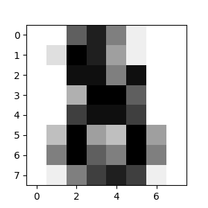

Introducción al aprendizaje automático con scikit-learn¶
Sección de contenidos
En esta sección, introducimos el vocabulario machine learning que utilizamos en todo scikit-learn y damos un ejemplo sencillo de aprendizaje.
Aprendizaje automático: el escenario del problema¶
En general, un problema de aprendizaje considera un conjunto de n muestras de datos y, a continuación, intenta predecir propiedades de datos desconocidos. Si cada muestra es más que un solo número y, por ejemplo, una entrada multidimensional (también conocida como datos multivariantes), se dice que tiene varios atributos o características.
Los problemas de aprendizaje se dividen en varias categorías:
aprendizaje supervisado, en el que los datos vienen con atributos adicionales que queremos predecir (Haz clic aquí para ir a la página de aprendizaje supervisado de scikit-learn).Este problema puede ser:
clasificación: las muestras pertenecen a dos o más clases y queremos aprender, a partir de datos ya etiquetados, a predecir la clase de los datos no etiquetados. Un ejemplo de problema de clasificación sería el reconocimiento de dígitos escritos a mano, en el que el objetivo es asignar cada vector de entrada a una de un número finito de categorías discretas. Otra forma de pensar en la clasificación es como una forma discreta (en contraposición a la continua) de aprendizaje supervisado en la que se tiene un número limitado de categorías y para cada una de las n muestras proporcionadas, se trata de etiquetarlas con la categoría o clase correcta.
regresión: si la salida deseada consiste en una o más variables continuas, entonces la tarea se llama regresión. Un ejemplo de problema de regresión sería la predicción de la longitud de un salmón en función de su edad y peso.
aprendizaje no supervisado, en el que los datos de entrenamiento consisten en un conjunto de vectores de entrada x sin ningún valor objetivo correspondiente. El objetivo de estos problemas puede ser descubrir grupos de ejemplos similares dentro de los datos, lo que se denomina conglomerado, o determinar la distribución de los datos dentro del espacio de entrada, lo que se conoce como estimación de la densidad, o proyectar los datos desde un espacio de alta dimensión hasta dos o tres dimensiones con el fin de visualizarlos (Haz clic aquí para ir a la página de aprendizaje no supervisado de Scikit-Learn).
Conjunto de entrenamiento y conjunto de pruebas
El aprendizaje automático consiste en aprender algunas propiedades de un conjunto de datos y, a continuación, comprobar esas propiedades con otro conjunto de datos. Una práctica habitual en el aprendizaje automático es evaluar un algoritmo dividiendo un conjunto de datos en dos. Llamamos a uno de esos conjuntos el conjunto de entrenamiento, sobre el que aprendemos algunas propiedades; llamamos al otro conjunto el conjunto de prueba, sobre el que probamos las propiedades aprendidas.
Carga de un conjunto de datos de ejemplo¶
scikit-learn viene con unos cuantos conjuntos de datos estándar, por ejemplo los conjuntos de datos iris y digits para clasificación y el conjunto de datos diabetes para regresión.
A continuación, iniciamos un intérprete de Python desde nuestro shell y luego cargamos los conjuntos de datos iris y digits. Nuestra convención de notación es que $ denota el prompt del terminal mientras que >> denota el prompt del intérprete de Python:
$ python
>>> from sklearn import datasets
>>> iris = datasets.load_iris()
>>> digits = datasets.load_digits()
Un conjunto de datos es un objeto tipo diccionario que contiene todos los datos y algunos metadatos sobre los datos. Estos datos se almacenan en el miembro .data, que es un arreglo n_samples, n_features. En el caso del problema supervisado, una o más variables de respuesta se almacenan en el miembro .target. Puedes encontrar más detalles sobre los diferentes conjuntos de datos en la sección dedicada a los conjuntos de datos.
Por ejemplo, en el caso del conjunto de datos de dígitos, digits.data da acceso a las características que pueden utilizarse para clasificar las muestras de dígitos:
>>> print(digits.data)
[[ 0. 0. 5. ... 0. 0. 0.]
[ 0. 0. 0. ... 10. 0. 0.]
[ 0. 0. 0. ... 16. 9. 0.]
...
[ 0. 0. 1. ... 6. 0. 0.]
[ 0. 0. 2. ... 12. 0. 0.]
[ 0. 0. 10. ... 12. 1. 0.]]
y digits.target da la verdad fundamental para el conjunto de datos de dígitos, es decir, el número correspondiente a cada imagen de dígitos que estamos tratando de aprender:
>>> digits.target
array([0, 1, 2, ..., 8, 9, 8])
Forma de los arreglos de datos
Los datos son siempre un arreglo 2D, de forma (n_samples, n_features), aunque los datos originales pueden haber tenido una forma diferente. En el caso de los dígitos, cada muestra original es una imagen de forma (8, 8) y se puede acceder a ella mediante:
>>> digits.images[0]
array([[ 0., 0., 5., 13., 9., 1., 0., 0.],
[ 0., 0., 13., 15., 10., 15., 5., 0.],
[ 0., 3., 15., 2., 0., 11., 8., 0.],
[ 0., 4., 12., 0., 0., 8., 8., 0.],
[ 0., 5., 8., 0., 0., 9., 8., 0.],
[ 0., 4., 11., 0., 1., 12., 7., 0.],
[ 0., 2., 14., 5., 10., 12., 0., 0.],
[ 0., 0., 6., 13., 10., 0., 0., 0.]])
El ejemplo simple sobre este conjunto de datos ilustra cómo partiendo del problema original se pueden moldear los datos para su consumo en scikit-learn.
Carga de conjuntos de datos externos
Para cargar desde un conjunto de datos externo, consulte cargar conjuntos de datos externos.
Aprendizaje y predicción¶
En el caso del conjunto de datos de dígitos, la tarea consiste en predecir, dada una imagen, qué dígito representa. Se nos dan muestras de cada una de las 10 clases posibles (los dígitos del cero al nueve) sobre las que ajustamos un estimador para poder predecir las clases a las que pertenecen las muestras no vistas.
En scikit-learn, un estimador para la clasificación es un objeto Python que implementa los métodos fit(X, y) y predict(T).
Un ejemplo de estimador es la clase sklearn.svm.SVC, que implementa la clasificación por vectores de soporte. El constructor del estimador toma como argumentos los parámetros del modelo.
Por ahora, consideraremos el estimador como una caja negra:
>>> from sklearn import svm
>>> clf = svm.SVC(gamma=0.001, C=100.)
Elección de los parámetros del modelo
En este ejemplo, establecemos el valor de gamma manualmente. Para encontrar buenos valores para estos parámetros, podemos utilizar herramientas como grid search y cross validation.
La instancia del estimador clf (para clasificador) se ajusta primero al modelo; es decir, debe aprender del modelo. Esto se hace pasando nuestro conjunto de entrenamiento al método fit. Para el conjunto de entrenamiento, utilizaremos todas las imágenes de nuestro conjunto de datos, excepto la última imagen, que reservaremos para nuestra predicción. Seleccionamos el conjunto de entrenamiento con la sintaxis [:-1] de Python, que produce un nuevo arreglo que contiene todos los elementos menos el último de digits.data:
>>> clf.fit(digits.data[:-1], digits.target[:-1])
SVC(C=100.0, gamma=0.001)
Ahora puedes predecir nuevos valores. En este caso, predecirás utilizando la última imagen de digits.data. Al predecir, determinarás la imagen del conjunto de entrenamiento que mejor corresponda con la última imagen.
>>> clf.predict(digits.data[-1:])
array([8])
La imagen correspondiente es:
Como puedes ver, es una tarea difícil: al fin y al cabo, las imágenes tienen poca resolución. ¿Estás de acuerdo con el clasificador?
Un ejemplo completo de este problema de clasificación está disponible como ejemplo que puede ejecutar y estudiar: Reconocimiento de dígitos escritos a mano.
Convenciones¶
los estimadores de scikit-learn siguen ciertas reglas para hacer su comportamiento más predictivo. Estas se describen con más detalle en el Glosario de Términos Comunes y Elementos de la API.
Fundición de tipo¶
A menos que se especifique lo contrario, la entrada se convertirá en float64:
>>> import numpy as np
>>> from sklearn import random_projection
>>> rng = np.random.RandomState(0)
>>> X = rng.rand(10, 2000)
>>> X = np.array(X, dtype='float32')
>>> X.dtype
dtype('float32')
>>> transformer = random_projection.GaussianRandomProjection()
>>> X_new = transformer.fit_transform(X)
>>> X_new.dtype
dtype('float64')
En este ejemplo, X es float32, que se convierte en float64 mediante fit_transform(X).
Los objetivos de regresión se convierten en float64 y los objetivos de clasificación se mantienen:
>>> from sklearn import datasets
>>> from sklearn.svm import SVC
>>> iris = datasets.load_iris()
>>> clf = SVC()
>>> clf.fit(iris.data, iris.target)
SVC()
>>> list(clf.predict(iris.data[:3]))
[0, 0, 0]
>>> clf.fit(iris.data, iris.target_names[iris.target])
SVC()
>>> list(clf.predict(iris.data[:3]))
['setosa', 'setosa', 'setosa']
Aquí, el primer predict() devuelve un arreglo de enteros, ya que iris.target (un arreglo de enteros) fue utilizado en fit. El segundo predict() devuelve un arreglo de cadenas, ya que iris.target_names fue para el ajuste.
Reajuste y actualización de los parámetros¶
Los hiperparámetros de un estimador pueden actualizarse después de su construcción mediante el método set_params(). Llamar a fit() más de una vez sobrescribirá lo aprendido por cualquier fit() anterior:
>>> import numpy as np
>>> from sklearn.datasets import load_iris
>>> from sklearn.svm import SVC
>>> X, y = load_iris(return_X_y=True)
>>> clf = SVC()
>>> clf.set_params(kernel='linear').fit(X, y)
SVC(kernel='linear')
>>> clf.predict(X[:5])
array([0, 0, 0, 0, 0])
>>> clf.set_params(kernel='rbf').fit(X, y)
SVC()
>>> clf.predict(X[:5])
array([0, 0, 0, 0, 0])
Aquí, el núcleo por defecto rbf se cambia primero a lineal mediante SVC.set_params() después de construir el estimador, y se vuelve a cambiar a rbf para volver a ajustar el estimador y hacer una segunda predicción.
Ajuste multiclase vs. multietiqueta¶
Cuando se utiliza clasificadores multiclase, la tarea de aprendizaje y predicción que se realiza depende del formato de los datos de destino que se ajustan a:
>>> from sklearn.svm import SVC
>>> from sklearn.multiclass import OneVsRestClassifier
>>> from sklearn.preprocessing import LabelBinarizer
>>> X = [[1, 2], [2, 4], [4, 5], [3, 2], [3, 1]]
>>> y = [0, 0, 1, 1, 2]
>>> classif = OneVsRestClassifier(estimator=SVC(random_state=0))
>>> classif.fit(X, y).predict(X)
array([0, 0, 1, 1, 2])
En el caso anterior, el clasificador se ajusta a un arreglo 1d de etiquetas multiclase y el método predict() por lo tanto proporciona las correspondientes predicciones multiclase. También es posible ajustar sobre un arreglo 2d de indicadores de etiquetas binarias:
>>> y = LabelBinarizer().fit_transform(y)
>>> classif.fit(X, y).predict(X)
array([[1, 0, 0],
[1, 0, 0],
[0, 1, 0],
[0, 0, 0],
[0, 0, 0]])
Aquí, el clasificador es fit() en una representación de etiqueta binaria 2d de y, utilizando la LabelBinarizer. En este caso, predict() devuelve un arreglo 2d que representa las correspondientes predicciones multietiqueta.
Obsérvese que la cuarta y la quinta instancia devuelven todos ceros, lo que indica que no coinciden con ninguna de las tres etiquetas fit. En el caso de las salidas multietiquetas, también es posible que una instancia reciba varias etiquetas:
>>> from sklearn.preprocessing import MultiLabelBinarizer
>>> y = [[0, 1], [0, 2], [1, 3], [0, 2, 3], [2, 4]]
>>> y = MultiLabelBinarizer().fit_transform(y)
>>> classif.fit(X, y).predict(X)
array([[1, 1, 0, 0, 0],
[1, 0, 1, 0, 0],
[0, 1, 0, 1, 0],
[1, 0, 1, 0, 0],
[1, 0, 1, 0, 0]])
En este caso, el clasificador se ajusta a las instancias que tienen asignadas múltiples etiquetas. El MultiLabelBinarizer se utiliza para binarizar el arreglo 2d de multilabels para fit. Como resultado, predict() devuelve un arreglo 2d con múltiples etiquetas predichas para cada instancia.